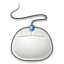

Hardware
In diesem Bereich geht es um die Installation und Einrichtung der Hardware. Ubuntu erkennt sehr viele Komponenten während der Installation und richtet sie automatisch ein. Dennoch ist bei einigen Fällen Handarbeit nötig, um die Hardware im vollen Umfang nutzen zu können.
| Weiterführende Übersichtsseiten | |||||
| Grafikkarten und Anzeigegeräte Grafiktreiber installieren und einrichten und alles über Anzeigegeräte | Soundkarten Soundkarten installieren und einrichten | TV-Karten Fernsehen am PC | |||
| Drucker verschiedene Drucker unter Ubuntu installieren | Scanner Scanner und Scanprogramme |  | Eingabegeräte Maus, Tastatur & Co. | ||
| Notebooks Einrichtung verschiedener Notebooks und Energieverwaltung | Mobilgeräte Software für Mobilfunkgeräte und PDAs |  | Sonstige Hardware Netzwerk-Hardware, Laufwerke und sonstiges | ||
Allgemeines¶
Systeminformationen ermitteln
 Übersichtsartikel
ÜbersichtsartikelGerätemanager - Hardware-Informationen grafisch anzeigen
zusätzliche Treiber installieren
Alte Hardware
Betrieb von Ubuntu auf älterer HardwareBenchmarks
diverse Testprogramme Unigine - Benchmark speziell für Grafikkarten
BIOS aktualisieren - Allgemeines zur Aktualisierung des BIOS
DeviceKit - moderne Schnittstelle zwischen Software und Hardware
dmidecode - Hardware-Informationen des BIOS auslesen
Hardwaredatenbanken - Liste von externen Hardwaredatenbanken
Hardware blacklist - diese Hardware läuft trotz aller Versuche leider nicht
Hardware/Problembehebung - erste Hilfe
Hardwareaustausch - Was ist zu tun, wenn der Rechner umgebaut wird?
Lm sensors - Hardware-Sensoren abfragen
Firmware Test Suite - Kompatibilitätsprüfung von BIOS und Kernel
usbreset - USB-Ports per Kommandozeile neu verbinden
USBIP - USB-Hardware über das Netzwerk freigeben
- Erstellt mit Inyoka
-
 2004 – 2017 ubuntuusers.de • Einige Rechte vorbehalten
2004 – 2017 ubuntuusers.de • Einige Rechte vorbehalten
Lizenz • Kontakt • Datenschutz • Impressum • Serverstatus -
Serverhousing gespendet von